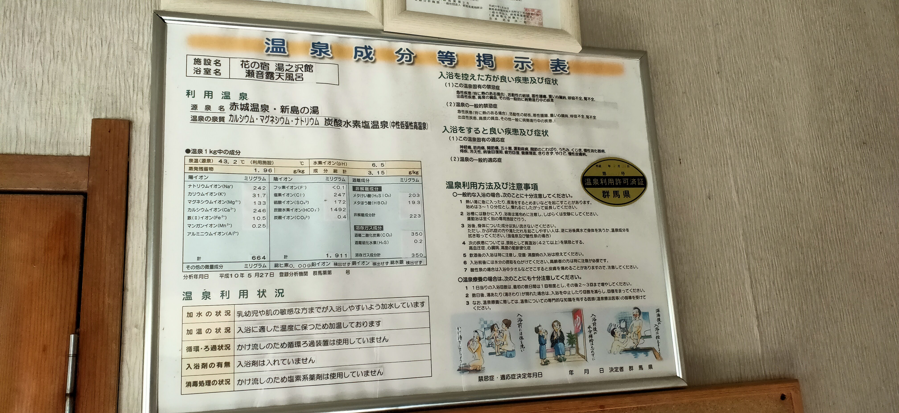
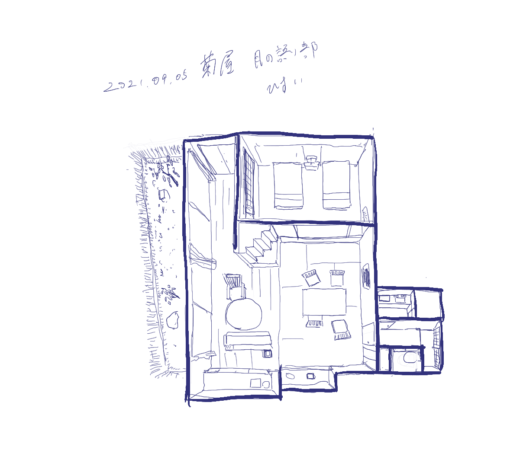

draft..
行った/行ってない MEMO
行った
東北
- 青森県
- 岩手
- 宮城
関東
- 群馬
- 赤城温泉 湯の沢館 reasonable! it's little hard to visit but there is good atomosphere. An ingredient is copper. 
- 栃木
- 鬼怒川温泉
- 那須温泉 鹿の湯 630年、狩野三郎行広の発見に始まったそう。硫黄臭があり、入ったあとのあったかさずっと続く。40-46度の温泉に分かれており、バラエティ性もある。かなり好き。
- 茨城
- 筑波温泉 塩素の香り強め。
- 埼玉
- 東京
- 千葉
- 神奈川
- 山梨
- ほったらかし温泉 泉質も良いし、何より景色が気持ち良い。

中部
- 静岡
- 土肥温泉 たたみの宿 湯の花亭 無色透明、味なし。畳が敷かれた露天風呂があるのだが、やっぱりお尻に
- 修善寺温泉 湯回廊 菊屋 アルカリ性単純温泉、無色透明、味なし。旅館が最高であった。昔から続く温泉宿でありながら、部屋は新しく最後まで心地よい。 
- 新潟
- 越後湯沢温泉 スキーついでに、行った。すごい気持ち良いのは寒かったからか..
- 長野
- 白骨温泉 弱酸性の乳白食の温泉。子供の時に行ったきり、もう一度行ってみたい。
- 那須温泉 - 那須マウントホテル
- 岐阜
- 石川
- 和倉温泉
- 山中温泉
- 福井
近畿
中国
四国
- 愛媛
- 道後温泉
- 香川
- 高知
- 徳島
九州
- 福岡
- 大分
- 熊本
- 宮崎
行ってみたい
東北
- 青森県
- 秋田県
- 乳頭温泉
- 田沢湖高原温泉郷
- 十和田大湯温泉
- 宮城
- 鳴子温泉
- 気仙沼温泉
- 山形
- 福島
- 飯坂温泉
関東
- 群馬
- 栃木
- 奥日光湯元
- 奥塩原新湯温泉（オクシオバラアラユ）
- 茨城
- 埼玉
- 東京
- 千葉
- 神奈川
- 山梨
中部
近畿
中国
四国
- 愛媛
- 道後温泉
- 香川
- 高知
- 徳島
Ref:
勉強
温泉の種類
温泉の発生元
火山性温泉
- 地表に染み込んだ雨や雪が、マグマの熱によって温められたもの
泉質の形成
- マグマのガス成分の混入
- マグマの熱水溶液の混入
- 温泉の流動による、岩石の成分の溶解
非火山性温泉 - 深層地下水型
高温岩帯や地下増温率による地熱を熱源として温められたもの ※ 高温岩帯 .. マグマが冷えた高温の岩石がある場所 ※ 地下増温率 .. 深度が深くなるほど地温が上昇し、一般的に100mごとに温度が約３℃ずつ上昇すること。非火山性温泉 - 化石海水型
太古の地殻変動などで地中に閉じこめられている古い海水を元とする温泉。
※ Ref
温泉の色による分類
- 白色系(乳白色・灰白色・黄白色)
- 乳白色: 硫黄化合物 (酸性が強く硫化水素の濃度が高いほど濁りが発生しやすい)
- 乳白色: 泥や粘士質が含まれている
- 青色系(水色・青白色)
- 水色: メタ珪酸（シリ力）の含有量が多い + 高温
- 青白色: 上記 + 硫黄化合物
- 赤色系(赤色・赤褐色)
- 赤色: 鉄分を含む温泉が参加した水酸化第2鉄を多く含む。（酸性が強いと沈殿が起こりにくい）
- 緑色系（緑色・黄緑色）
- 淡い緑色: 酸性鉄泉
- 黄緑: 中性|アルカリ性 硫黄泉 硫化水素
- 褐色系(黒褐色・茶褐色)
- 黒褐色: 腐植質が多い
- 茶褐色: 腐植質がそこまで ※腐植質 .. 古い時代のシダ植物や海藻類が地中で分解されてできた有機化合物 https://www.spa.or.jp/onsen/3977/